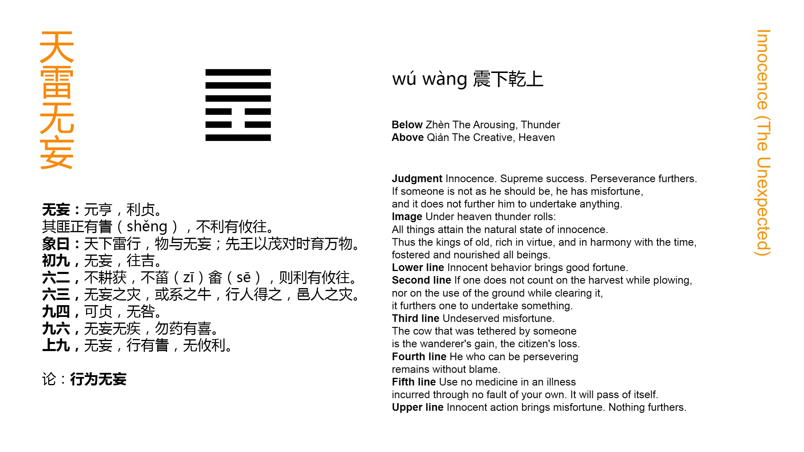

Chinese: 无妄 ䷘ wú wàng

Wú Wàng ䷘ indicates great progress and success, while there will be advantage in being firm and correct. If (its subject and his action) be not correct, he will fall into errors, and it will not be advantageous for him to move in any direction.
1. The first NINE, undivided, shows its subject free from all insincerity. His advance will be accompanied with good fortune.
䷘ changing to ䷋
Matching Line 1 in Adjacent Hexagram: ䷙
2. The second SIX, divided, shows one who reaps without having ploughed (that he might reap), and gathers the produce of his third year's fields without having cultivated them the first year for that end. To such a one there will be advantage in whatever direction he may move.
䷘ changing to ䷉
Matching Line 2 in Adjacent Hexagram: ䷙
3. The third SIX, divided, shows calamity happening to one who is free from insincerity; -- as in the case of an ox that has been tied up. A passer by finds it (and carries it off), while the people in the neighbourhood have the calamity (of being accused and. apprehended).
䷘ changing to ䷌
Matching Line 3 in Adjacent Hexagram: ䷙
4. The fourth NINE, undivided, shows (a case) in which, if its subject can remain firm and correct, there will be no error.
䷘ changing to ䷩
Matching Line 4 in Adjacent Hexagram: ䷙
5. The fifth NINE, undivided, shows one who is free from insincerity, and yet has fallen ill. Let him not use medicine, and he will have occasion for joy (in his recovery).
䷘ changing to ䷔
Matching Line 5 in Adjacent Hexagram: ䷙
6. The topmost NINE, undivided, shows its subject free from insincerity, yet sure to fall into error, if he take action. (His action) will not be advantageous in any way.
䷘ changing to ䷐
Matching Line 6 in Adjacent Hexagram: ䷙
Wú Wàng ䷘ is the symbol of being reckless, and often of being insincere; Wú Wàng ䷘ is descriptive of a state of entire freedom from such a condition; its subject is one who is entirely simple and sincere. The quality is characteristic of the action of Heaven, and of the highest style of humanity. In this hexagram we have an essay on this noble attribute. An absolute rectitude is essential to it. The nearer one comes to the ideal of the quality, the more powerful will be his influence, the greater his success. But let him see to it that he never swerve from being correct.
The first line is strong; at the commencement of the inner trigram ☳ denoting movement, the action of its subject will very much characterise all the action set forth, and will itself be fortunate.
Line 2 is weak, central, and in its correct place. The quality may be predicated of it in its highest degree. There is an entire freedom in its subject from selfish or mercenary motive. He is good simply for goodness' sake. And things are so constituted that his action will be successful.
But calamity may also sometimes befal the best, and where there is this freedom from insincerity; and line 3 being weak, and in the place of an even line, lays its subject open to this misfortune. 'The people of the neighbourhood' are of course entirely innocent.
Line 4 is the lowest in the trigram ☰ of strength, and 1 is not a p. 112 proper correlate, nor is the fourth the place for a strong line. Hence the paragraph must be understood as a caution.
Line 5 is strong, in the central place of honour, and has its proper correlate in 2. Hence its subject must possess the quality of the hexagram in perfection. And yet he shall he sick or in distress. But he need not be anxious. Without his efforts a way of escape for him will be opened.
Line 6 is at the top of the hexagram, and comes into the field when the action has run its course. He should be still, and not initiate any fresh movement.